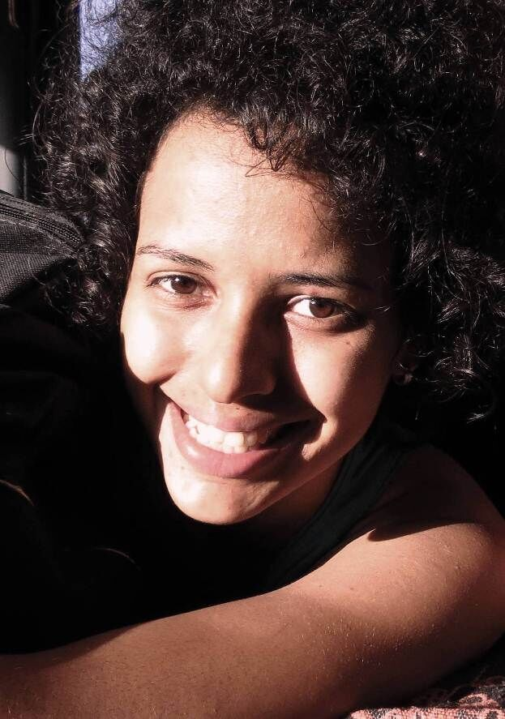
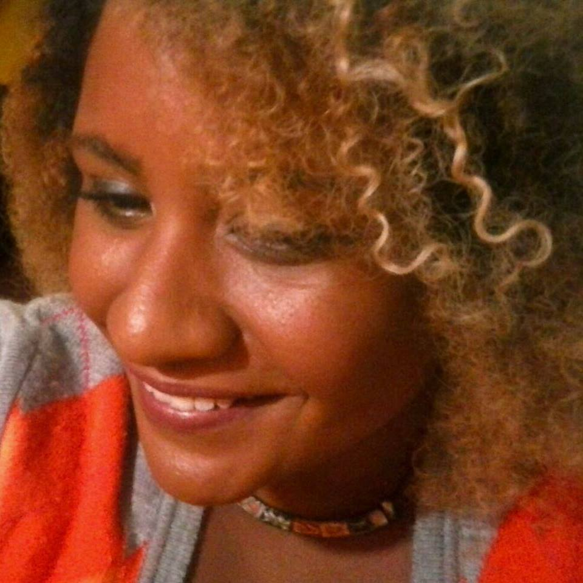

Funções / Oficinas e cursos livres
As informações de cada perfil são de responsabilidade das profissionais.
Você quer conhecer profissionais de quais estados?
Marcar/Desmarcar todos
CARREGANDO ...
Amanda Duarte (AL)
Amanda Duarte
Maceió (AL)
amandad.mov@gmail.com
Comunicadora social com habilitação em Jornalismo, graduada pela Universidade Federal de Alagoas. Começou a se aproximar do Cinema e do Audiovisual em 2012 e, desde então, tem atuado nas áreas de produção, difusão e formação. É feminista, idealista social e militante cultural.
http://amandaduarte.jor.br
Outras atividades de Amanda Duarte
Assistência de Produção
|
Direção |
Exibição
|
Programação e curadoria |
Roteiro
Amostra de vídeo
 Amanda Lopes (SP)
Amanda Lopes (SP)
Amanda Lopes
34 anos | São Paulo (SP)
amanda_lopes0@hotmail.com
Formada em Administração de Empresas e professora de matemática. Atuei por 10 anos na área de Recursos Humanos. Graduanda do último ano em Comunicação Social com ênfase em Cinema. Persistente, bastante curiosa e proativa. Me sinto uma eterna aluna. Crio histórias há 20 anos, porém somente nos últimos 4 anos encarei o cinema e pude participar de mais de 25 curtas metragens. FIES, zero recursos, muita fé e alguns amigos, arrisquei nos meus projetos próprios. Empreendedora atualmente desenvolvo a plataforma Mulheres Audiovisual voltada para distribuição de filmes feitos por mulher e vagas direcionadas a esse público.
http://amandalopesfilmes.wixsite.com/portfolio
Outras atividades de Amanda Lopes
Assistência de Direção |
Captação de Recursos |
Coordenação de Projeto |
Direção |
Edição |
Exibição |
Produção |
Programação e curadoria |
Roteiro
Amostra de vídeo
 Beatriz Vieirah (BA)
Beatriz Vieirah (BA)
Beatriz Vieirah
24 anos | São Félix (BA)
b.vieirah1@gmail.com
Graduanda em Cinema e Audiovisual pela Universidade Federal do Recôncavo da Bahia, ativista negra feminista, fotógrafa, coordenadora e idealizadora do Projeto Seminário Cinema Negro Brasileiro. Tem experiência no cinema e vídeo como filmmaker, assistente de direção, câmera, roteiro e preparação de atores, com destaque para as obras cinematográficas, Lápis de Cor, O Cadeado, Entre Passos, Sinfonia de Uma Pequena Cidade, Noite de Baile, telefilme O milagre dos pássaros e o videoclipe Mau Achismo. Ministrou oficinas de Produção de Vídeo e Cinema Negro. Suas pesquisa gira em torno de Mulheres Negras no Cinema. E atualmente está produzindo o filme Em busca de Lélia, enquanto diretora.
Outras atividades de Beatriz Vieirah
Direção |
Direção de fotografia |
Pesquisa e desenvolvimento |
Preparação de elenco |
Roteiro
Amostra de vídeo
 Carem Abreu (MG)
Carem Abreu (MG)
Carem Abreu
46 anos | Belo Horizonte (MG)
caremabreu@gmail.com
Cineasta, jornalista e capoeirista angoleira. Atuo desde 1996 nos setores Audiovisual e de Culturas Populares como Pesquisadora, Gestora Cultural, Diretora, Roteirista, Produtora Executiva, de Elenco e de Set. Idealizadora da Mostra CineAfroBH.
ATUAÇÃO PROFISSIONAL: ATOS CENTRAL DE IMAGENS. youtube.com/user/atosimagens
Desde 2007: Produtora Executiva, Diretora e Roteirista Atuais 2015: produção executiva do filme e seriado CIDADE DO SOL (Ação, 2015MG, Guto Aeraphe) webseriados.tv (vimeo.com/ondemand/webseriecidadedosol).
PRÊMIO: novembro 2015 Edital de Intercâmbio do MINC > Oficina de Produção Audiovisual em DAKAR, Senegal, na Associação Batuk de Comunicação e Cultura.
http://www.mostracineafrobh.com
Outras atividades de Carem Abreu
Direção |
Exibição |
Ensino superior |
Pesquisa e desenvolvimento |
Produção |
Produção executiva |
Roteiro
Amostra de vídeo
 Carine Fiúza (PB)
Carine Fiúza (PB)
Carine Fiúza
27 anos | João Pessoa (PB)
carinefiuza@gmail.com
Graduanda em Rádio e Tv na Universidade Federal da Paraíba e colaboradora no Laboratório Audiovisual de Produção - LAP que integra o departamento de Cinema e Comunicação da UFPB. Concluiu os curso técnicos de Direção, Ass. de direção e Produção executiva pelo CANNE. Atualmente é Produtora, diretora e fotografa freelancer. Ministra cursos livres de cinema e audiovisual. Como diretora elenca os trabalhos: No escuro (2009), Autonomia Mulheres Rurais (2014), Campanha contra lesbofobia (2016); Como produtora: “Capela” (2014), “O Lendário…” (2014), “Ilha” (2014), “Nó do diabo” (2017). Além dos DVDs de “Chico César” para o Canal Brasil e o “Quinteto convida” para Tv UFPB.
https://www.facebook.com/carine.fiuza.3
Outras atividades de Carine Fiúza
Assistência de direção |
Assistência de fotografia |
Cineclubismo |
Coordenação de projeto |
Direção |
Exibição |
Fotografia still |
Gerência de mídia |
Pesquisa e desenvolvimento |
Produção
Amostra de vídeo
 Carol Rodrigues (SP)
Carol Rodrigues (SP)
Carol Rodrigues
32 anos | São Paulo (SP)
rsscarol@gmail.com
Formada em Ciências Sociais (Unicamp) e em Audiovisual (Usp). Paralelo a graduação, especializou-se como roteirista através de cursos livres em centros culturais. Em 2014, ganhei o edital Curta-Afirmativo, para realizar o curta “A boneca e o silêncio”, sobre a solidão de uma menina ao tomar a decisão de fazer um aborto. O filme participou de diversos festivais nacionais e internacionais, tendo vencido prêmios de Melhor Curta-Metragem em São Paulo, Belo Horizonte, Portugal e na Polônia, além de Prêmio de Melhor direção na Índia e de sido um dos finalistas como Melhor roteiro na Romênia. Foi roteirista e montadora da web série Zona SSP que está em finalização. Integra também a equipe da websérie Empoderadas enquanto roteirista, diretora e editora. Além disso, está na sala de roteiristas de uma série infantil que está sendo produzida pela Mixer-SP e tem lançamento previsto para outubro de 2017.
http://rsscarol.wixsite.com/portfolio
Outras atividades de Carol Rodrigues
Direção |
Edição |
Roteiro
Amostra de vídeo
 Daiane Rosário (BA)
Daiane Rosário (BA)
Daiane Rosário
25 anos | Salvador (BA)
ane_edicaocontato@hotmail.com
Montadora e Produtora há 6 anos, tem no currículo filmes, séries e programas de TV.
Outras atividades de Daiane Rosário
Edição |
Gerência de Mídia |
Produção |
Roteiro
Amostra de vídeo
 Dani Reis (RS)
Dani Reis (RS)
Dani Reis
29 anos | Viamão (RS)
dani.reis.87@gmail.com
Dani Reis é uma atriz gaúcha, nascida em 25 de fevereiro de 1987, natural de São Francisco de Paula na Serra Gaúcha. Atua no teatro desde 2010 e vem desenvolvendo um trabalho interessante no cinema e na publicidade também.
http://facebook.com/danielareisatriz
Outras atividades de Dani Reis
Atuação |
Dublagem |
Locução |
Pesquisa e desenvolvimento
Amostra de vídeo
 Erica Ribeiro (SP)
Erica Ribeiro (SP)
Erica Ribeiro
29 anos | São Paulo (SP)
eraribeiro@gmail.com
Artísta multifuncional.
http://eraribeiro.blogspot.com
Outras atividades de Erica Ribeiro
Atuação |
Cenografia |
Direção de Arte |
Dublagem |
Figurino |
Locução |
Maquiagem |
Preparação de Elenco
Amostra de vídeo
 Francine Barbosa (RJ/SP)
Francine Barbosa (RJ/SP)
Francine Barbosa
31 anos | São Paulo (RJ/SP)
francinibarbosa@gmail.com
Francine Barbosa é roteirista e educadora. Desenvolveu e ministrou oficinas de audiovisual nos programas Cine Escola Tela Brasil, Fábricas de Cultura, CulturAção e Programa VAI, nos quais orientou a produção de mais de 70 curtas metragens realizados por crianças, adolescentes e adultos. Foi coordenadora do curso Técnico em Direção Cinematográfica - Filmworks da Academia Internacional de Cinema entre 2014 e 2015. Atualmente desenvolve projetos de audiovisual voltados ao público adolescente e adulto, ministra aulas de roteiro e atua como parecerista em editais do FSA e outros órgãos.
https://www.linkedin.com/in/francinebarbosa
Outras atividades de Francine Barbosa
Ensino superior |
Roteiro
Amostra de vídeo
 Helô França (BA)
Helô França (BA)
Helô França
25 anos | Cachoeira (BA)
heloisa_1106@hotmail.com
Possui Bacharelado em Artes Visuais pela Universidade Federal do Recôncavo da Bahia (UFRB). Fotógrafa, performer, designer e trançadeira. Na fotografia, tem experiência na área do fotojornalismo, em direção de fotografia, no registro de eventos artísticos, shows, peças de teatro, aniversários, seminários, festivais, fóruns e congressos. Sua produção artística atual dialoga com o campo mítico religioso afro-baiano e tem como temática o corpo da mulher negra, enquanto corpo-templo, ancestralidade e fertilidade, envolvendo fotografia, vídeo arte, ilustrações e performance.
Outras atividades de Helô França
Direção de Fotografia |
Fotografia Still
Amostra de vídeo
 Íldima (PE)
Íldima (PE)
Íldima
35 anos | Recife (PE)
ildima@gmail.com
Pós graduada em Estudos Cinematográficos pela Unicap (PE), Íldima iniciou suas pesquisas sobre linguagem audiovisual ainda no processo de graduação, na Uneb (BA), tendo publicado a tese “Cinema, indústria e história: três momentos do cangaço no cinema brasileiro”, em 2004. Durante 3 anos realizou reflexões cinematográficas em seu blog “Embriaguez da Rapariga”. Em 2016, iniciou seu estudo sobre temporalidade e imagem com o primeiro trabalho titulado “O peso da câmera lenta”. Neste mesmo ano, formou o coletivo “Alastrado produções artísticas” no qual atual como diretora de arte, produtora e assistente de fotografia. Concilia pesquisa sobre a natureza da imagem e produção audiovisual.
https://www.facebook.com/alastrado/
Outras atividades de Íldima
Assistência de direção |
Cineclubismo |
Coordenação de projeto |
Crítica |
Direção de arte |
Pesquisa e desenvolvimento |
Produção |
Programação e curadoria |
Roteiro
 Josy Macedo (CE)
Josy Macedo (CE)
Josy Macedo
35 anos | Fortaleza (CE)
josy.macedo@gmail.com
É graduanda em Cinema e Audiovisual pela Universidade Federal do Ceará. Possui graduação em Administração de Empresas; pós-graduação em Gestão de Organizações do Terceiro Setor; e pós-graduação em Gestão Pública Municipal. No âmbito da cultura, é produtora cultural desde 2005, quando iniciou a carreira como atriz e produtora teatral. No cinema, dirigiu o curta "Estamos Bem?", produziu os curtas "21m" e "Um Assunto Meio Delicado", o cineclube Cine Rebuceteio e também participou da produção da Mostra Cine Nordeste.
Outras atividades de Josy Macedo
Atuação |
Audiodescrição |
Cineclubismo |
Direção |
Direção de arte |
Pesquisa e desenvolvimento |
Produção |
Produção executiva |
Roteiro
Amostra de vídeo
 Keila Borges (RJ)
Keila Borges (RJ)
Keila Borges
Rio de Janeiro (RJ)
borgeskeila.cine@gmail.com
Comecei no audiovisual em 2001 como assistente de produção mas, acabei focando mesmo em pós-produção, a partir de 2005. Passei por produtoras no Rio e SP, entre elas, a Pix Post, OpenFilms, Conspiração, HungryMan, Zola, Gullane, OceanFilms, DotCine e Casa Violeta. Desde 2015, faço consultorias para documentários e coordeno longas metragens, entre eles, Qualquer Gato Vira-Lata 2 e Até que a Sorte nos Separe 3. Coordeno projetos, equipes e organizo todo fluxo de mídia e trabalho de projetos simples aos mais complexos, em todos os gêneros e formatos. Também dou aulas de Pós na AIC-RJ e SP, Telezoom e organizo encontros mensais Jardim Digital: o Café com Pós. Fluente em inglês e espanhol.
http://resolvenapos.com
Outras atividades de Keila Borges
Coordenação de pós-produção
Amostra de vídeo
Kênia Freitas (DF)
Kênia Freitas
32 anos | Brasília (DF)
kenialice@gmail.com
Pós-doutoranda do programa de Mestrado da Universidade Católica de Brasília. Doutora em Comunicação e Cultura pela UFRJ. Formada em Comunicação Social/Jornalismo, na Ufes. Possui pesquisas em andamento no campo do documentário, das novas tecnologias e do movimento Afrofuturista. Realizou a Curadoria da Mostra Afrofuturismo: cinema e musica em uma diaspora intergalatica, realizada em 2015, no Caixa Belas Artes/SP. A oficina O Afrofuturismo no cinema, durante a I Mostra de Cinema Negro da Universidade Federal do Espírito Santo, em 2016. E a palestra “Afrofuturismo: viagens entre Brasil e África”, no Centro de Pesquisa e Formação do SESC São Paulo, em 2016, durante o festival Afreaka.
http://mostraafrofuturismo.com.br/
Outras atividades de Kênia Freitas
Coordenação de Projeto |
Crítica |
Ensino superior |
Produção |
Programação e curadoria
 Lidia dos Anjos (CE)
Lidia dos Anjos (CE)
Lidia dos Anjos
30 anos | Fortaleza (CE)
liddya1@gmail.com
Atriz , graduanda em Teatro pela UFC. Figurinista e costureira. Na Cia Cearense de Molecagem atuei em seus espetáculos infantis. Participei de espetáculos como Cale-se, com o Seres de Teatro, grupo que ainda atuo. Experimento I, foi trabalho totalmente autoral do grupo ETIPI do qual fui fundadora em 2013. Outros espetáculos: Disfarça, meu bem; Cidade sem Nome, etc. Performances: Carandiru pra Quem?;Bandido bom é Bandido Morto, Pátria Amada com Margens Urbanas ( grupo de intervenção que sou membro) Figurino: Disfarça, Meu bem; Cidade sem nome; Experimento I, Cale-se. Figurino e Arte em curtas Salto 15, VS EX SR tristeza com o Coletivo Descabelo. Preparação de elenco: Curta, Iracema.
Outras atividades de Lidia dos Anjos
Assistência de direção |
Atuação |
Direção de arte |
Figurino |
Pesquisa e desenvolvimento |
Preparação de elenco |
Roteiro
Amostra de vídeo
 Lindiwe Aguiar (BA)
Lindiwe Aguiar (BA)
Lindiwe Aguiar
Salvador (BA)
ogunjavideos@ogunjavideos.com.br
Videomaker e Jornalista formada pelo Liceu de Artes e Ofícios da Bahia, foi educadora de vídeo na Fundação Cidade Mãe por 8 anos. Coordenou e ministrou oficinas de produção de mídias em diversas ONG’s e instituições de ensino na Bahia. Em 2015 Lindiwe Aguiar recebeu o Troféu Bronze do Prêmio Mulher de Negócios Sebrae.
http://www.ogunjavideos.com.br
Outras atividades de Lindiwe Aguiar
Coordenação de Projeto |
Correção de cor |
Desenho de efeitos |
Direção |
Edição |
Produção
Amostra de vídeo
 Luciana Medeiros (SC)
Luciana Medeiros (SC)
Luciana Medeiros
38 anos | Florianópolis (SC)
lumedeiros.vieira@gmail.com
Sou maquiadora e cabeleireira, formada na Argentina pela Kryolan e Makeup Lab e com diversos cursos de especialização na área da maquiagem na Argentina, EUA e Brasil. Atuo em meu Studio próprio confeccionando maquiagem social, artística, moda/publicidade, teatro, fotos e audiovisual, além de fornecer cursos profissionalizantes e de especialização para maquiadores. Também atuo no SENAC Florianópolis como professora dos cursos de beleza (Design de Sobrancelhas e Maquiagem). Meu foco de atuação é maquiagem para alta definição para fotos/vídeos, preferencialmente para trabalhos no audiovisual.
http://www.lucianamedeiros.com.br
Outras atividades de Luciana Medeiros
Maquiagem
Amostra de vídeo
 Luh Moreira (SP)
Luh Moreira (SP)
Luh Moreira
31 anos | São Paulo (SP)
luhmoreira.producao@gmail.com
Formada em RTV, cursou pós-graduação em Produção Executiva e Gestão de Televisão, possui conhecimento nas áreas de gestão e produção de projetos de capacitação cinematográfica (principalmente voltados para a juventude oriunda de comunidades populares e periféricas), produção de curta e longa-metragem (set e mesa), produção cultural, mídias sociais, desenvolvimento e gestão de projetos audiovisuais entre outros conhecimentos de utilidade para o setor.
Outras atividades de Luh Moreira
Assistência de Direção |
Coordenação de Projeto |
Pesquisa e desenvolvimento |
Produção
Amostra de vídeo
 Maíra Zenun (DF)
Maíra Zenun (DF)
Maíra Zenun
34 anos | Brasília (DF) e Lisboa (Portugal)
mairazenun@yahoo.com.br
Fotógrafa e investigadora, com formação nas áreas da sociologia e do cinema, desde 2007 desenvolvo trabalho autoral e coletivo, em imagens, vídeos e textos poéticos, expostos em coleções privadas, publicações impressas, virtuais, festivais, mostras, livros e blogs.
http://floresdemaiomairazenun.blogspot.br
Outras atividades de Maíra Zenun
Cineclubismo |
Direção de Fotografia |
Pesquisa e desenvolvimento |
Produção |
Roteiro
Amostra de vídeo
 Mariani Lima (SP)
Mariani Lima (SP)
Mariani Lima
25 anos | Campinas (SP)
mariani_lima@hotmail.com
Formada em Cinema e Audiovisual na UFPel, atualmente trabalho como cinegrafista e editora freelancer em Campinas. Também sou Audiodescritora certificada.
http://www.vimeo.com/mariani
Outras atividades de Mariani Lima
Assistência de Direção |
Atuação |
Direção |
Direção de Fotografia |
Edição |
Fotografia Still |
Roteiro
Amostra de vídeo
 Michelle Andrews (AM)
Michelle Andrews (AM)
Michelle Andrews
32 anos | Manaus (AM)
michelleandrewsdifusao@gmail.com
Michelle Andrews, manauara, é produtora cultural, videomaker, fundadora do Coletivo Difusão (AM), autodidata atua em projetos socioculturais e ambientais desde 2004. Ministrou oficina e workshops no campo da produção audiovisual. Elabora e executa projetos de diversas linguagens desenvolvidos em território brasileiro, em especial na região Amazônica. Atualmente é coordenadora da MIVA: Mostra Internacional de Videodança, Semana do Audiovisual em Manaus e Centro Popular do Audiovisual
https://www.facebook.com/michelleandrewsnorte
Outras atividades de Michelle Andrews
Captação de Recursos |
Cineclubismo |
Edição |
Roteiro
Amostra de vídeo
 Naymare Azevedo (RN)
Naymare Azevedo (RN)
Naymare Azevedo
24 anos | Natal (RN)
naymaresazevedo@gmail.com
Naymare Azevedo, produtora executiva, gestora de políticas públicas e marketing cultural. Diretora criativa do Espaço Criativo Aayabá e coordenadora do projeto de formação criativa do AFROTONIZAR.
Outras atividades de Naymare Azevedo
Assistência de Direção |
Atuação |
Captação de Recursos |
Cineclubismo |
Coordenação de Projeto |
Direção |
Pesquisa e desenvolvimento |
Produção |
Produção executiva
Amostra de vídeo
 Priscila Oliveira (SP)
Priscila Oliveira (SP)
Priscila Oliveira
28 anos | Valinhos (SP)
priscifch@gmail.com
Sou formada em Ciências Sociais e Midialogia, pesquiso direção de criança para cinema no curso Mestrado em Artes da Cena. Minha formação e experiências estão voltadas para roteiro e direção, mas gosto de ampliar meus conhecimentos teóricos e práticos em outras áreas do audiovisual. Também tenho interesse em trabalhos que envolvam o negro e a mulher no cinema (na frente e atrás da câmera), principalmente em relação à construção de personagens.
https://www.facebook.com/ameiavista
Outras atividades de Priscila Oliveira
Assistência de Direção |
Direção |
Ensino superior |
Figurino |
Fotografia Still |
Gerência de Mídia |
Pesquisa e desenvolvimento |
Preparação de Elenco |
Produção |
Programação e curadoria |
Roteiro
Amostra de vídeo
 Priscila Xavier (PE)
Priscila Xavier (PE)
Priscila Xavier
25 anos | Recife (PE)
priscilaxavier06@gmail.com
Graduada em Rádio, TV e Internet pela Universidade Federal de Pernambuco trabalha desde 2012 com áudio-descrição, tradução visual para pessoas cegas e com baixa visão. Facilita oficinas de Comunicação Inclusiva e foi premiada com o 3º Melhor Roteiro de Áudio-descrição e Melhor Áudio-descrição pelo Júri Popular com o curta “Pérolas de Açúcar” no Festival VerOuvindo 2014. No ano seguinte fundou a Entrelinhas Comunicação Acessível, onde oferece serviços de áudio-descrição, legenda para surdos e Libras, buscando atuar principalmente no setor audiovisual.
http://entrelinhasca.com
Outras atividades de Priscila Xavier
Audiodescrição |
Locução
Amostra de vídeo
 Thais Scabio (SP)
Thais Scabio (SP)
Thais Scabio
39 anos | São Paulo (SP)
thaisscabio@gmail.com
Diretora, Produtora, educadora e cineclubista. Coordenadora dos projetos "JAMAC Cinema Digital" e " coletivo Mascate Cineclube", em São Paulo. Trabalha com cinema digital desde 2002. Graduada em Comunicação Social, Especialista em Direção de Cinema e Video pela ELCV de Santo André. Sócia-fundadora da produtora Cavalo Marinho Audiovisual, foi produtora executiva da animação "Graffiti Dança, ganhadora do prêmio de Melhor Curta Brasileiro do Anima Mundi 2013. Atualmente produz e dirige a websérie "Terror em um minuto" e esta em desenvolvimento de seu primeiro longa-metragem.
http://www.cavalomarinhoaudiovisual.com
Outras atividades de Brenda Thais Scabio
Direção |
Cineclubismo |
Produção |
Produção executiva |
Roteiro
Amostra de vídeo
 Ticiane Simões (AL)
Ticiane Simões (AL)
Ticiane Simões
33 anos | Maceió (AL)
ticiane.santana@hotmail.com
Sou atriz em Alagoas, portanto necessito exercer várias outras funções para sobreviver. Sou negra e indígena, embora admita não ter um aprofundamento de minha árvore genealógica. Sou "multifacetaria", inquieta e guerreira. Já fiz, e faço ainda, muitos trabalhos para o teatro e nos últimos anos venho me permitindo descobrir o cinema. Bem, sempre é mais fácil falar de um personagem que de mim...